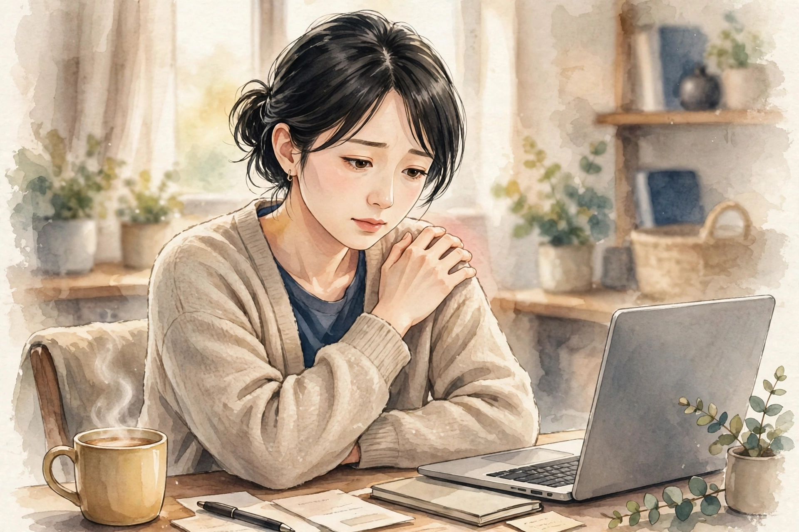

新宿で朝起きたときに気になる背中の張り｜起き抜けの姿勢とセルフケア

朝、目覚ましで目を覚ました瞬間、背中の真ん中あたりが張るように感じたり、肩甲骨の内側が重く感じたりすることはないでしょうか。起き上がるときに背中がこわばっているように感じたり、伸びをしても張りが残ったりすることも、朝ならではの感覚かもしれません。夜のあいだ体を動かさない時間が続くと、背中の筋肉は同じ姿勢で休んだままになり、起き抜けに張りを感じやすくなると言われています。今回は、朝起きたときに背中の張りが気になるときの要因の整理と、起き抜けのセルフケアをご紹介します。
朝起きたとき、背中はどんな状態になっているのか
眠っているあいだ、体は横になった姿勢のまま、ほとんど動きません。背中の筋肉は、起きているときのように姿勢を支える働きをしていないため、寝返りの回数が少ない夜は、同じ姿勢が長く続きます。同じ姿勢が続くと、背中の筋肉はこわばりやすくなり、起き抜けに張りを感じることがあります。また、夜のあいだは体温が少し下がる時間帯があり、筋肉が冷えた状態で朝を迎えることもあります。冷えた筋肉は伸びにくく、起き上がるときの動き出しに張りを感じやすくなると言われています。さらに、寝具の硬さや枕の高さも、朝の背中の感覚と関係していることがあります。体に合わない寝具では、寝ているあいだに背中が反りすぎたり、沈み込みすぎたりして、朝の張りにつながることがあります。
考えられる要因の整理
朝の背中の張りが気になるとき、要因は一つではなく、いくつかの要素が重なっていることが多いです。まずは自分の夜の過ごし方と照らし合わせてみましょう。
- 寝ているあいだの姿勢の固定：寝返りが少なく、同じ姿勢が長く続くと、背中の筋肉がこわばりやすくなります。横向きのまま朝を迎えた日は、体の片側だけに張りを感じることもあります。
- 寝具の硬さや枕の高さ：体に合わない寝具では、背中が反りすぎたり、沈み込みすぎたりして、朝の張りにつながることがあります。枕が高すぎると、首から背中にかけてのラインが崩れやすくなります。
- 夜の冷え：夜のあいだに体温が下がり、筋肉が冷えた状態で朝を迎えると、張りを感じやすくなります。布団から肩や背中が出たまま眠っていた日は、とくに冷えを感じやすくなります。
- 前日の疲れの持ち越し：デスクワークや通勤でたまった背中のこわばりが、夜のあいだにほどけず、朝に残ることもあります。残業の続いた週は、朝の張りを感じやすくなることがあります。
- 起き上がり方の勢い：目覚ましで急に起き上がると、まだ温まっていない背中の筋肉に急な動きが加わり、張りを感じやすくなります。勢いよく体を起こす日は、背中のこわばりに気づきやすくなります。
日常で取り入れられるセルフケア
朝の背中の張りのケアは、起きる前と、起き上がった直後のひとときに取り入れるのがおすすめです。無理のない範囲で、続けてみてください。
起きる前の、布団の中での伸び
目が覚めたら、すぐに起き上がらず、布団の中で両腕を頭の上に伸ばし、つま先まで伸ばす動きを数回行います。呼吸を止めず、気持ちのよい範囲で行うことが大切です。伸びをするときは、背中を反らしすぎず、体全体をゆっくり伸ばすイメージで行いましょう。
座って行う背中の丸めと反らし
起き上がって椅子に座ったら、両手を膝の上に置き、背中をゆっくり丸めてから、胸を開くように反らす動きを数回繰り返します。丸めるときは息を吐きながら、反らすときは息を吸いながら行うと、呼吸と動きが合いやすくなります。
朝の温かい飲み物と、肩まわりの動き
温かい飲み物で体を内側から温めたあと、両肩をすくめてからストンと下ろす動きを数回行います。肩を回す動きも、肩甲骨まわりのこわばりをほどくきっかけになります。温かい飲み物は、朝の冷えた体を温める助けにもなります。
寝具の見直し
枕の高さは、横向きに寝たときに頭と背中のラインがまっすぐになる高さを目安にします。マットレスや敷き布団が柔らかすぎて体が沈み込む場合は、硬さの見直しも検討してみてください。寝具を変えるときは、一度にすべてを変えるのではなく、枕だけ、敷き布団だけと、一つずつ試すのがおすすめです。
朝の起き抜けをいたわる、小さな工夫
朝の支度は、時間に追われて慌ただしくなりがちです。そんな朝こそ、起き抜けの数分を体をいたわる時間にしてみてください。まず、目覚ましを少し早めにかけ、起き上がる前に布団の中で体を伸ばす余裕を作ります。次に、洗面所へ行く前に、窓を開けて朝の光を浴びる習慣もおすすめです。朝の光は、体のオンとオフの切り替えを整える助けになると言われています。通勤の準備では、重いバッグを片側の肩にだけかけ続けず、リュックに変えたり、左右で持ち替えたりする工夫も取り入れられます。新宿駅の構内では、エスカレーターではなく階段を選ぶ日を作ると、朝のうちに背中を動かすきっかけになります。朝食は、温かい汁物を一品加えると、体を内側から温める助けになります。起き抜けの張りを感じた日は、無理に体を動かすのではなく、温めて、ゆっくり伸ばして、少しずつ動き出すことが大切です。
受診の目安
セルフケアを続けるときのコツは、朝の習慣として定着させることです。起きる前の伸び、座って行う背中の動き、温かい飲み物。この三つのうち、一つだけでも毎朝続けることで、起き抜けの張りを感じにくくなります。張りを感じた日は、その日の夜に湯船に浸かって体を温め、翌朝のこわばりをため込まない工夫も取り入れてみてください。朝の背中の感覚は、その日の体調を知る手がかりにもなります。自分の体の声に耳を傾け、その日の体調に合った過ごし方を選ぶことが、朝の張りとうまく付き合うためのポイントです。
新宿で、朝の背中の張りと付き合う
朝起きたときの背中の張りは、夜のあいだの姿勢の固定や冷え、前日の疲れの持ち越しなどが重なって起こりやすくなります。起きる前の伸び、座って行う背中の動き、温かい飲み物といった小さな習慣が、朝のこわばりをため込まない助けになります。肩こり、首こり、姿勢・猫背についても、同じように要因の整理とセルフケアをまとめていますので、あわせてご覧ください。美容整体ステラ・リゲルは、東京・新宿エリアで開院準備中の女性専用サロンです。オイルマッサージと美容整体で、朝の張りを感じやすい体を丁寧にほぐすお手伝いができるよう、準備を進めています。近日開院予定（受付は開始次第、このサイトとLINE公式でお知らせします）。